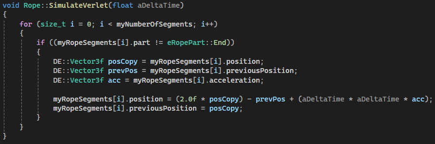
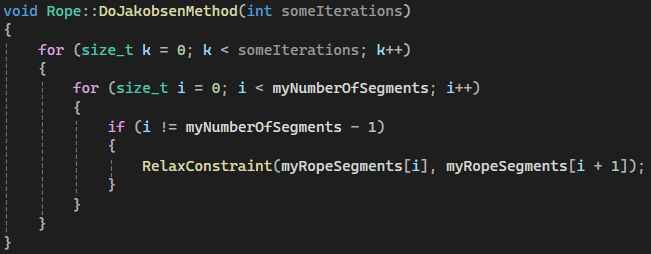
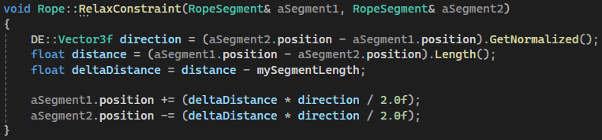

Rope & chain simulation using Verlet Integration and Jakobsen Constraint Relaxation

Verlet Integration
Position-Based Motion
The core of the rope simulation uses Verlet integration to update each segment's position. Unlike traditional Euler integration which tracks velocity explicitly, Verlet derives motion from the difference between the current and previous positions. This makes the simulation inherently more stable and resistant to energy accumulation errors.
Each frame, every non-fixed segment computes its new position using the formula:
newPos = 2 * currentPos - previousPos + acceleration * dt^2
The previous position is then stored for the next frame. This approach naturally handles damping and produces smooth, physically plausible motion without needing to explicitly manage velocity vectors.
Inputs:
Delta Time: The time step for the current
frame.
Position: The segment's current world
position.
Previous Position: Where the segment was last
frame.
Acceleration: External forces like gravity
acting on the segment.
Output:
Updated position and previous position for each rope segment, producing continuous, stable motion.

Jakobsen Constraint Relaxation
Iterative Distance Constraints
After Verlet integration moves each segment freely, the rope's structural integrity is restored through the Jakobsen method. This technique iterates over all adjacent segment pairs multiple times, pushing or pulling them to maintain a fixed rest length between each connection.
The number of iterations directly controls accuracy versus performance. More iterations produce a stiffer, more accurate rope, while fewer iterations allow more elasticity and stretch. Even a small number of passes (3-5) produces convincing results for most gameplay scenarios.
Purpose:
- Enforce fixed distances between connected segments.
- Prevent the rope from stretching or compressing unnaturally.
- Converge toward physically correct positions through repeated relaxation passes.

Relaxing Individual Constraints
The RelaxConstraint function handles the actual correction between two connected segments. It calculates the current distance between them, compares it to the desired rest length, and shifts both segments equally along the connecting axis to satisfy the constraint.
Fixed endpoints (like attachment points or anchors) are skipped during correction, ensuring the rope stays connected to its anchor while the rest of the chain adjusts naturally. This is what allows one end to be pinned to a wall or a player's hand while the rest swings freely.
Inputs:
Segment A & B: Two adjacent rope segments to
constrain.
Rest Length: The target distance between the
segments.
Rope Part Type: Whether a segment is fixed
(anchor/end) or free.
Output:
Corrected positions for both segments, maintaining the rope's structural length without breaking connectivity.

How It All Comes Together
Each frame, the simulation runs in two phases. First, Verlet integration advances all free segments based on their momentum and external forces like gravity. This gives each segment a natural trajectory but may violate the rope's length constraints.
Then, the Jakobsen method runs multiple correction passes, pulling segments back to their correct distances from each other. The more passes, the stiffer and more accurate the rope appears. Together, these two steps produce a rope that swings, drapes, and reacts to forces in a way that feels physically convincing — all at a low computational cost suitable for real-time gameplay.
This approach is versatile and can be applied to grappling hooks, chains, hanging cables, bridges, or any flexible linkage where realistic physics adds to the player experience.
This implementation was inspired by this article on rope simulation. If you'd like to dive deeper into the math and theory behind it, it's a great read.